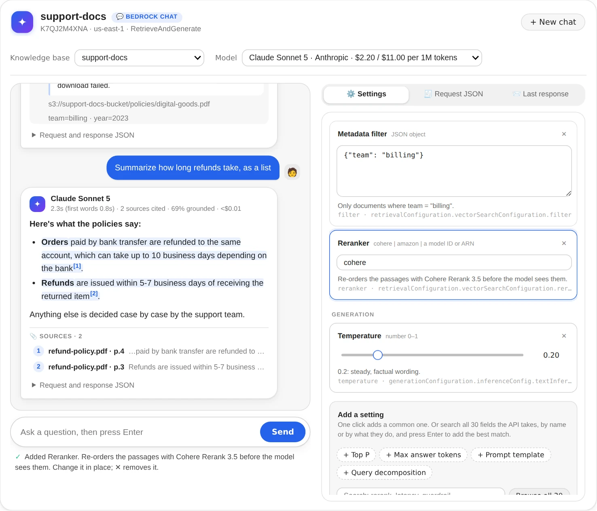
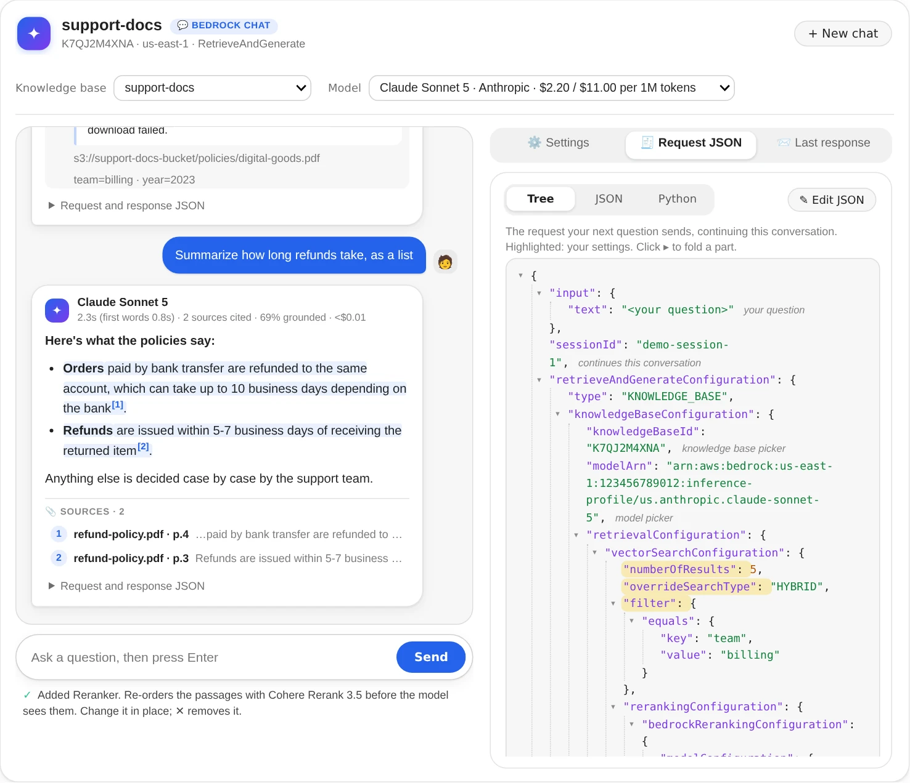
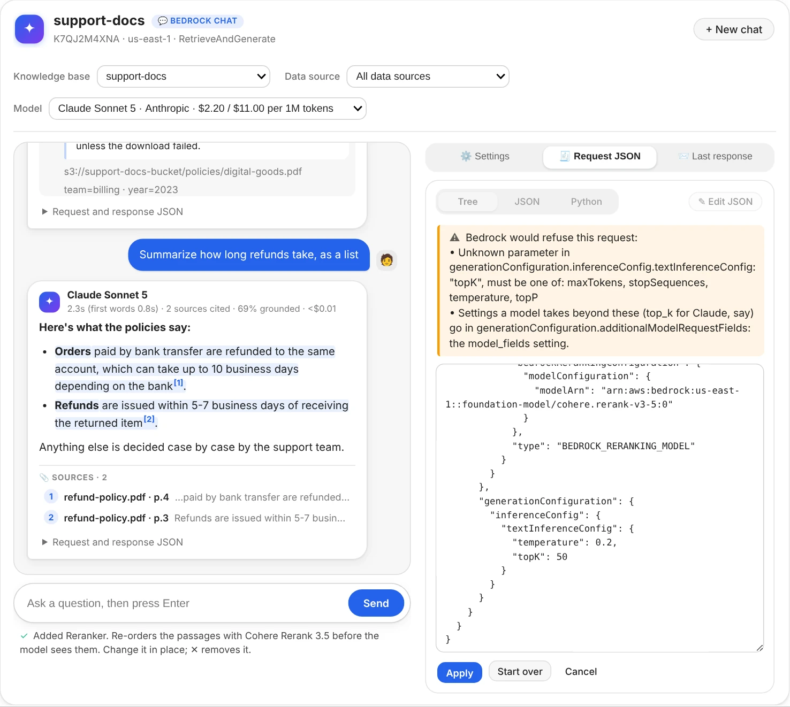

Contents
aws-analyzer · bedrock_chat.py
Chat with a Bedrock knowledge base, and see exactly what's sent
One Python file and one call, chat(), open a chat window in your notebook. Pick the knowledge base and the model, ask questions, and change what's sent (passages, search type, filter, reranker, temperature, prompt, or any other field of the API) while you watch the request it makes, as JSON you can edit.
- One file, boto3 + ipywidgets
- Every RetrieveAndGenerate field
- Answers stream as they're written
- Read-only: changes no knowledge base
The examples use a knowledge base called support-docs holding support policies, some tagged with a team and a year. Use your own names. The screenshots are the real window in JupyterLab, run against a simulated Bedrock with synthetic documents, so the answers and times are illustrative. For checking a knowledge base's health, its syncs, and what a search retrieves, see the Knowledge Bases guide.
Set up in SageMaker
-
Get
bedrock_chat.pynext to your notebook. Pick whichever works in your environment:- Upload it. Download bedrock_chat.py, then drag it into JupyterLab's file browser, in the same folder as your notebook.
- Fetch it from a cell, if the notebook can reach the internet:
!curl -sO https://raw.githubusercontent.com/utkarsh5026/aws-analyzer/main/analyzers/bedrock_chat.py - Copy it from S3, for a notebook with no internet access (VPC-only mode). Upload it to a bucket once, then:
!aws s3 cp s3://acme-ml-data/tools/bedrock_chat.py . - Or paste the whole file into a notebook cell and run it.
-
Open the window. It uses the notebook's IAM execution role and region, so there's nothing to configure.
from bedrock_chat import chat chat() # pick the knowledge base and the model in the window chat("support-docs", model="sonnet") # or start on these: a name, ID or ARN; a model ID or short name chat("support-docs", n=8, temperature=0.2, search_type="hybrid", where={"team": "billing"}) -
Optional: another region or AWS profile, or keep the view to use from other cells.
ui = chat("support-docs", region="us-west-2", profile="dev") ui.set(max_tokens=1024) # the open window follows ui.transcript() # the conversation as a report that stays in the saved notebook
boto3 and ipywidgets. Both are preinstalled on SageMaker (Studio and notebook instances). Without ipywidgets, or outside Jupyter, chat() says so and every other command still works as a report: ask(), settings(), request() and the rest. Answers come from Bedrock itself, so no model SDK is needed.
The chat window
Type a question and press Enter. The answer appears as it's written, then settles into its final form: the text with each cited span shaded and numbered, who answered and how long it took (and how long until the first words), how many sources it cites, how much of it they back up, and an estimated cost.
![The chat window: support-docs and Claude Sonnet 5 picked at the top; two answers about refunds, each with its cited spans shaded and numbered, its sources (one opened to the full passage with the question's words highlighted, its S3 location and its metadata) and a folded Request and response JSON; on the right, the Settings tab with Passages 5 and Search type HYBRID, each explained in a sentence, buttons to add a metadata filter, a reranker, temperature and more, and the chat() call that opens this setup again](images/chat-window-dark.webp)
- Sources. Each answer lists the passages it cites. Click one to read it in full, with the question's words highlighted, its S3 location and its metadata.
- Request and response JSON, folded under each answer: exactly what that question sent and what came back, so you can compare answers asked with different settings.
- Findings appear under an answer when something's off, and say which setting to try: Bedrock's “unable to assist” reply (retrieve more passages, try HYBRID search, or loosen the filter), an answer that cites nothing, one mostly not backed by its sources, a guardrail that stepped in, or an answer cut off by
max_tokens. - Follow-ups keep the conversation: Bedrock remembers the earlier questions. New chat starts over, and so does picking another knowledge base. Another model keeps the conversation.
- The line under the box counts the questions and the estimated cost so far. An error shows where the answer would have been, says what to do, and puts your question back in the box.
Settings
The Settings tab lists everything sent with every question. Under each value is what it means, in a sentence, and where it goes in the request. Only what's listed is sent; for everything else Bedrock uses its defaults.

- Change a value in place: a slider for temperature, a list for the search type, a box for numbers, text and JSON. A value that can't be sent (temperature 1.5, JSON with a typo) turns red and says why, and isn't sent until it's fixed.
- Remove one with ✕.
- Add the common ones with one click (+ Temperature, + Metadata filter, + Reranker...), or any other field by typing its name or its path in Add a setting. The box suggests names as you type and explains the one you've typed. The fields come from your installed boto3's description of the API, so every field it can send is there, with its type and range.
Warnings under the settings catch what Bedrock would refuse, or what won't do what it seems to: both temperature and top_p on a newer Claude model (it takes one), a prompt without $output_format_instructions$ (answers lose their citations), a guardrail ID without a version, a reranker with too few passages to choose from. Open this setup again shows the chat(...) call with your knowledge base, model and settings, to paste into another notebook.
Settings with short names
Pass these to chat() or set() as keywords. Paths and the API's own names work too: maxTokens, generationConfiguration.performanceConfig.latency.
| Name | What it does | Sent as (from knowledgeBaseConfiguration) |
|---|---|---|
n | Passages to retrieve, 1 to 100 (Bedrock's default is 5) | retrievalConfiguration.vectorSearchConfiguration.numberOfResults |
search_type | "HYBRID" (meaning and exact words) or "SEMANTIC" | …vectorSearchConfiguration.overrideSearchType |
filter (or where) | Only documents whose metadata matches: {"team": "billing"}, {"year": [">=", 2024]}, or a Bedrock filter | …vectorSearchConfiguration.filter |
reranker, rerank_n | Re-order the passages with "cohere" or "amazon" (or a model ID), and keep the best rerank_n | …vectorSearchConfiguration.rerankingConfiguration |
temperature, top_p | Randomness, 0 to 1. Newer Claude models take one of the two | generationConfiguration.inferenceConfig.textInferenceConfig |
max_tokens, stop | The longest answer, in tokens; up to 4 stop sequences | …textInferenceConfig.maxTokens, stopSequences |
prompt | Your own prompt template. Needs $search_results$; keep $output_format_instructions$ for citations. Adding it starts from bedrock_chat.DEFAULT_PROMPT | generationConfiguration.promptTemplate.textPromptTemplate |
model_fields | The model's own settings, passed as they are: {"top_k": 50} for Claude | generationConfiguration.additionalModelRequestFields |
guardrail_id, guardrail_version | A guardrail that screens the question and the answer | generationConfiguration.guardrailConfiguration |
latency | "optimized" for latency-optimized inference, where offered | generationConfiguration.performanceConfig.latency |
query_decomposition | True: split a complicated question into simpler searches | orchestrationConfiguration.queryTransformationConfiguration.type |
orchestration_prompt | The prompt of the step that rewrites the question | orchestrationConfiguration.promptTemplate.textPromptTemplate |
kms_key | A KMS key for the conversation Bedrock keeps | sessionConfiguration.kmsKeyArn (from the request's root) |
Values are forgiving: "0.2" and 0.2, "hybrid" and "HYBRID", JSON or a Python dict for the JSON fields, one stop sequence per line. ui.fields() lists every field, including the ones without a short name (the reranker's metadata settings, the orchestration step's inference settings...).
The request as JSON
The Request JSON tab shows the exact request your next question will send, and follows every change you make. Your settings are highlighted; the fields the chat fills in are labelled (the knowledge base and model from the pickers, the session that continues the conversation, required fields such as the reranker's type). Each object folds with a click.

- Text shows the same JSON as plain text, and Python the same call with boto3, ready to paste into your own code. One click on either selects all of it.
- Edit JSON opens the request as text. Add, change or delete any field, then Apply: the settings, the knowledge base and the model follow what you wrote. Before anything changes, the request is checked the way boto3 checks it before sending, so a misspelt field, a wrong type or a missing required field is refused with the reason, and nothing changes.
- Last response shows what Bedrock sent back, folded below the top levels, and the request that was sent.

Without the window
The object chat() returns is a BedrockChatView. Its commands render reports under the cell (HTML in Jupyter, plain text in a terminal), share the window's settings and conversation, and an open window follows them.
from bedrock_chat import BedrockChatView
ui = BedrockChatView(kb="support-docs", model="sonnet")
ui.ask("How long do refunds take?") # the answer with [1][2] citations, sources, findings, cost
ui.ask("And for digital goods?") # a follow-up in the same conversation
ui.set(temperature=0.2, n=8) # change settings; None removes one
ui.unset("temperature") # stop sending one
ui.settings() # every setting in plain English, with warnings
ui.fields("rerank") # every field you can send that mentions "rerank"
ui.request() # the JSON the next question sends, and the Python call
ui.last() # the last answer: passages in full, request and response
ui.transcript() # the whole conversation
ui.new_chat() # start over
ui.app() # the windowThe window lives in the running notebook: it doesn't come back when a saved notebook is reopened. ui.transcript() writes the conversation as a report that does.
Use the data in Python
ui.answers holds the conversation's answers, ui.values the settings, and ui.core the BedrockChatAnalyzer, which returns data instead of printing:
a = ui.answers[-1] # Answer
a.text, a.citations, a.sources, a.grounded_share
a.request, a.response # exactly what was sent and what came back
df = a.to_df() # one row per cited source
core = ui.core
params = core.request("support-docs", "refund window?", {"n": 8, "temperature": 0.2}) # the request, not sent
a = core.ask("support-docs", "refund window?", {"n": 8}, model="sonnet")
a = core.ask("support-docs", "and for EU orders?", session_id=a.session_id) # a follow-up
core.schema().fields["temperature"] # Field: its path, type, range and what it doesThe analysis functions don't call AWS: request_schema, normalize_settings, coerce_setting, build_request, settings_from_request, validate_request, python_call, parse_rag, collect_stream, as_filter, describe_filter, describe_setting, answer_cost, and the findings, settings_findings and answer_findings.
Cost
Each answer shows an estimated cost, and the line under the box the conversation's total. RetrieveAndGenerate doesn't report tokens, so they're estimated from characters: the question, the prompt, and the passages retrieved (only the cited ones come back, so their average size stands in for the rest). The estimate adds the question's embedding and, with a reranker, the reranking. Prices are us-east-1 list prices (MODEL_PRICES, GLOBAL_MODEL_PRICES and BEDROCK_PRICES, the same tables as bedrock_kb.py); a model not in the table shows its cost as unknown. For exact token counts, use bedrock_kb.py's ask(engine="converse").
from bedrock_chat import BedrockChatAnalyzer, BedrockChatView
ui = BedrockChatView(BedrockChatAnalyzer(model_prices={"claude-sonnet-5": (2.00, 10.00)})) # $ per 1M tokens
ui.app()Permissions
Everything is read-only: RetrieveAndGenerate reads the knowledge base and generates text. A list the role can't read (knowledge bases, models) becomes a box to type into instead of a picker, with a note that says which permission is missing. This policy covers everything:
{
"Version": "2012-10-17",
"Statement": [
{
"Sid": "AskKnowledgeBases",
"Effect": "Allow",
"Action": ["bedrock:ListKnowledgeBases", "bedrock:Retrieve", "bedrock:RetrieveAndGenerate"],
"Resource": "*"
},
{
"Sid": "ListModels",
"Effect": "Allow",
"Action": ["bedrock:ListFoundationModels", "bedrock:ListInferenceProfiles"],
"Resource": "*"
},
{
"Sid": "GenerateAnswers",
"Effect": "Allow",
"Action": "bedrock:InvokeModel",
"Resource": ["arn:aws:bedrock:*::foundation-model/*", "arn:aws:bedrock:*:*:inference-profile/*"]
}
]
}| Permission | Used by |
|---|---|
bedrock:ListKnowledgeBases | The knowledge base picker, kbs, and finding a knowledge base by name |
bedrock:RetrieveAndGenerate and bedrock:Retrieve on the knowledge base, bedrock:InvokeModel on the model or inference profile | Asking, in the window or with ask; streamed answers use the same permission |
bedrock:ListFoundationModels, bedrock:ListInferenceProfiles | The model picker, models, and turning model="sonnet" into an ID |
kms:Decrypt, kms:GenerateDataKey on the key | Only with the kms_key setting |
A model also has to be enabled for the account under Model access in the Bedrock console. A guardrail needs bedrock:ApplyGuardrail on it.
Troubleshooting
The cell shows text instead of the window, or “Error displaying widget”
The window needs ipywidgets in the kernel and its extension in JupyterLab. On SageMaker both are there. Elsewhere, run %pip install ipywidgets, then reload the browser tab. A window from before the notebook was reopened can't come back (it lived in the old kernel): run chat() again, and use ui.transcript() to keep a conversation in the saved notebook.
“Both temperature and top_p are set …” or the model refuses temperature
Newer Claude models take one of the two. Remove one with ✕ (or ui.unset("top_p")). If the model refuses temperature on its own, remove it too.
“This model needs an inference profile”
Pick the model again in the picker: it lists models with the inference profile to call them through. With model=, pass the profile the note names, such as "us.anthropic.claude-sonnet-5".
“This vector store only does SEMANTIC search”
Hybrid search needs a store that keeps the text searchable, such as OpenSearch Serverless with a text field. Remove the search type.
The answer is “Sorry, I am unable to assist you with this request.”
RetrieveAndGenerate's reply when the passages it retrieved don't hold the answer. The finding under the answer says what to try: more passages, HYBRID search, or a looser filter. bedrock_kb.py's search() shows every passage a question retrieves, not only the cited ones.
Answers arrive all at once instead of word by word
Either “Show answers as they're written” is off in Settings, the installed boto3 is too old to stream (%pip install -U boto3), or streaming was refused where asking without it works. The status line says which.
A setting I need isn't in the list
The fields come from the installed boto3's description of the API, so a field AWS added recently needs a newer boto3: %pip install -U boto3, then restart the kernel. Model-specific settings (top_k, reasoning budgets) go in model_fields.
A follow-up says the conversation expired
Bedrock ends sessions after a while. The chat starts a new one and says so; that answer doesn't know the earlier questions, so ask the full question if it needs them.
An error about a managed knowledge base
Managed knowledge bases answer through a different API. Search one with bedrock_kb.py's search().
Command reference
Every BedrockChatView command. ui.help() prints the same list grouped by task, and ui.help("set") shows one command's full description.
| Command | What it shows |
|---|---|
chat(kb=None, model=None, *, region=None, profile=None, settings=None, stream=True, **values) | Opens the window and returns the view behind it |
app() | The chat window |
ask(question) | An answer with [1][2] citations, sources, findings and cost, as a report, in the same conversation |
new_chat() | Forgets the conversation; the settings stay |
transcript() | The conversation so far, as a report that stays in the saved notebook |
last() | The last answer in full: every cited passage, the request and the response, and the call in Python |
settings() | What's sent with every question, in plain English, with warnings and the chat(...) call that opens the setup again |
set(name=None, value=None, **values) | Changes settings: set(temperature=0.2), or set("a.field.path", value) |
unset(*names) | Stops sending settings |
fields(match=None) | Every field RetrieveAndGenerate takes: its name, type and range, what it does, and its path |
request(question=None) | The JSON the next question sends, and the same call in Python |
use(kb=None, model=None) | Switches the knowledge base or the model |
kbs() | The knowledge bases in the region |
models(match=None) | The models you can chat with, how each is called, and its price |
help(command=None) | This list, grouped by task; help("name") shows one command in full |